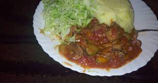

DOREEN'S KITCHEN SPACE
Welcome to my space where we try out new recipes.
Today we are going to learn how to prepare Smashed potatoes

Ingredients required.
- Potatoes
- Tomatoes sliced into halves
- Milk
- Butter
- Salt
- onions
Preparation
- Place salted water in a cooking pot to boil
- Add potatoes let them cook until tender for like five minutes
- Boil the milk and add some butter in another pan
- pour the already boiled milk mixture into the cooking pot and smash until it becomes smooth and
looks creamy.
- Cut the onions and mix with the tomatoes to make salad
- serve while its hot
Reviews